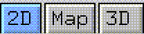
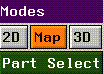
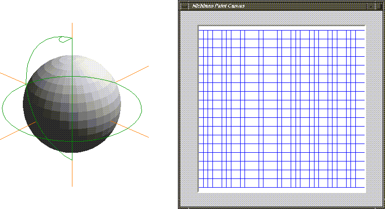
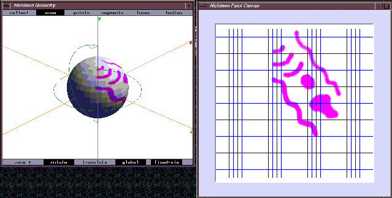
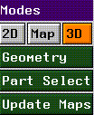

With 3D paint you can create texture maps directly on an object in one of two ways. You can paint images on a normal, flat canvas onto which the geometry of an object has been unfolded. The edges of the polygons are visible on the canvas, which helps you to orient yourself and your work with respect to the object. In 3D mode, you can use paint tools to draw directly onto an object in the Geometry window.
In this chapter, we'll cover:
In this Chapter
3D Paint works in conjunction with N-Geometry. Menu options which control 3D paint modes are only visible when N-Geometry is running concurrently with N-Paint.
Using 3D Paint

Using 3D Paint
To use 3D Paint, you must:

Map Mode


Part Select
You can paint on selected faces or face parts of an objects as well. N-Paint creates a matte using the selected parts.
Figure 9.5 The Select Face Part pop-up menu
3D Mode
3D mode allows you to paint directly onto an object. To select 3D Paint mode, (CLICK-L) on the 3D button in the Modes section of the Tools menu.

The 3D Paint Canvas
When you enter 3D mode, the Paint Canvas is replaced by the 3D Paint Canvas. The 3D Paint canvas reflects the current Geometry view. So, if you want to paint on a portion of your model that is hidden in the current view, just go to N-Geometry and move the camera until the parts you want to paint are visible.
Geometry
This button controls the current view mode for the Geometry window.
Update Maps
Use this control to save changes you've made to texture maps.
Copyright © 1996, Nichimen Graphics Corporation. All rights reserved.